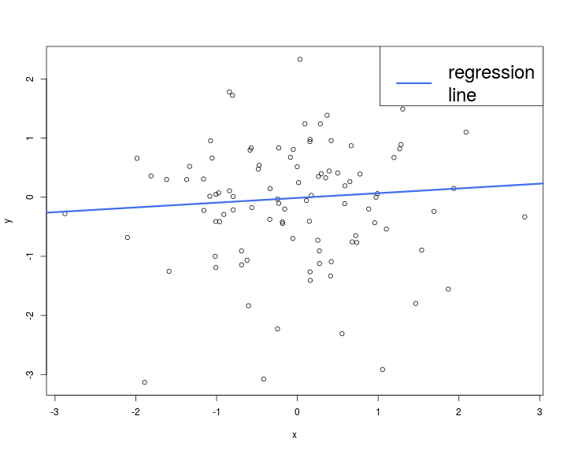
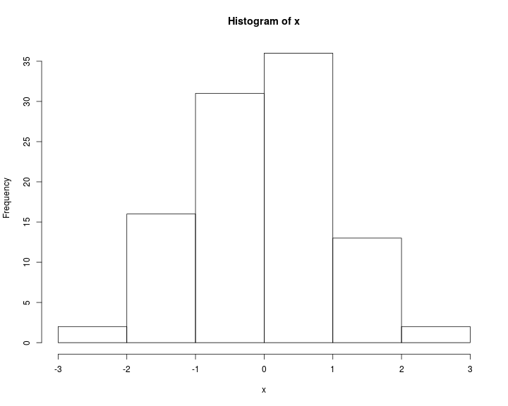
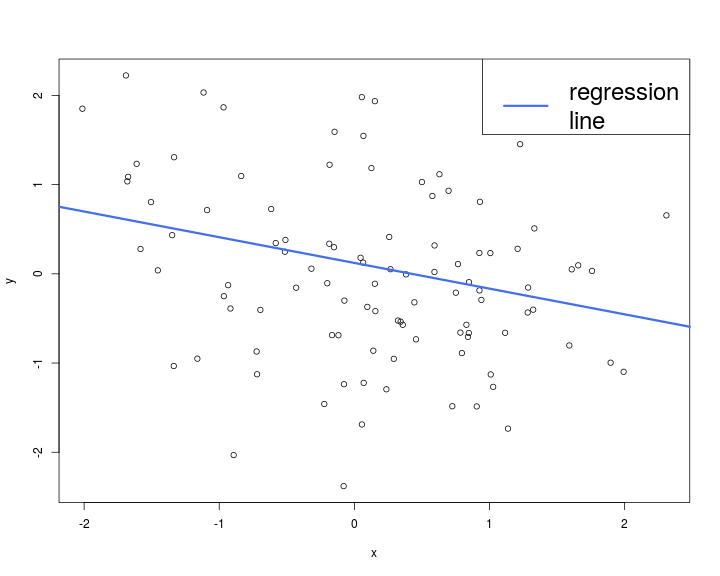

Derived from the S language
http://www.r-project.org/
R provides excellent graphics functionality (base graphics and additional packages)
Can be used both as a glorified calculator or as a “real” programming language
1 + 1[1] 22 + 3 * 4[1] 14sqrt(9)[1] 3pi[1] 3.141593x <- 5 #allocate value to an object
x = 5 #as above
print(x) # objects in console[1] 5x #same[1] 5a <- sqrt(81) #square root
b <- exp(2) #exponential function
c <- log(50) #logarithm
a * b + c #basic operations[1] 70.41353help("fun")
?funThe sos package (see next slide for installing packages) and the findfn function
install.packages("new_package")
install.packages(c("new_package1", "new_package2"))update.packages()# define vector by means of the
# specification of its single elements
W <- c(1,2,3,5,9,7)
W[1] 1 2 3 5 9 7# vector with a 3 (repeated 5 times)
X <- rep(3,5)
X[1] 3 3 3 3 3# combine vectors
A <- c(W,X)
A [1] 1 2 3 5 9 7 3 3 3 3 3# vector with values from 1 to 10 with stepsize 2
Y <- seq(0,10,2)
Y[1] 0 2 4 6 8 10#equals seq(0,10,1)
Z <- 0:10
Z [1] 0 1 2 3 4 5 6 7 8 9 10# element-wise addition
W+Y[1] 1 4 7 11 17 17# element-wise multiplication
W*Y[1] 0 4 12 30 72 70# element-wise multiplication with a scalar
5*W [1] 5 10 15 25 45 35length(W) #determine length of vector[1] 6t(W)%*%Y #transposition and vector multiplication [,1]
[1,] 188W[4] #select specific element[1] 5W[W>2][1] 3 5 9 7W[W>2 & W<7][1] 3 5which(W>2) #determine indices where a condition holds[1] 3 4 5 6A=matrix(0,nrow=2,ncol=3) #Initialize 2x3 matrix including 0
A [,1] [,2] [,3]
[1,] 0 0 0
[2,] 0 0 0A[1,3]=5 #allocate single value at position (1,3)
A [,1] [,2] [,3]
[1,] 0 0 5
[2,] 0 0 0A[,2]=c(1,2) #allocate values to a whole column (analogously with rows)
A [,1] [,2] [,3]
[1,] 0 1 5
[2,] 0 2 0A[-3] # A without the third element[1] 0 0 2 5 0B=matrix(c(1,1,1,2,2,2,3,3,3),3,3) #Initialize matrix with single values
B [,1] [,2] [,3]
[1,] 1 2 3
[2,] 1 2 3
[3,] 1 2 3C=diag(c(1,2,3)) #diagonal matrix
C [,1] [,2] [,3]
[1,] 1 0 0
[2,] 0 2 0
[3,] 0 0 3B * C #element-wise operations [,1] [,2] [,3]
[1,] 1 0 0
[2,] 0 4 0
[3,] 0 0 9B + C [,1] [,2] [,3]
[1,] 2 2 3
[2,] 1 4 3
[3,] 1 2 6B %*% C # matrix multiplication [,1] [,2] [,3]
[1,] 1 4 9
[2,] 1 4 9
[3,] 1 4 9A [,1] [,2] [,3]
[1,] 0 1 5
[2,] 0 2 0(A <- rbind(A, c(0, 1, 5))) #add row [,1] [,2] [,3]
[1,] 0 1 5
[2,] 0 2 0
[3,] 0 1 5(A <- cbind(A, c(0, 1, 4))) #add column [,1] [,2] [,3] [,4]
[1,] 0 1 5 0
[2,] 0 2 0 1
[3,] 0 1 5 4for loopfor (i in 1:3) {
print(i)
}[1] 1
[1] 2
[1] 3item <- c("Apple", "Orange", "Tomato")
for (i in item)
print(i)[1] "Apple"
[1] "Orange"
[1] "Tomato"while loopi <- 5
while(i < 10){
print(i)
i <- i + 1
}[1] 5
[1] 6
[1] 7
[1] 8
[1] 9if-then-elsex <- 8
y <- 7
if (x < y) {
print(x)
} else {
print(y)
}[1] 7ifelse()(z <- ifelse(x < y, x, y))[1] 7ifelse works with vectorsa <- c(3, 7, 8)
b <- c(4, 6, 9)
ifelse(a < b, a, b)[1] 3 6 8# Value of a N(5,34) density function of at point x=2
dnorm(x=2, mean = 5, sd = 7) [1] 0.05199096# Value of a N(0,1) distribution function at point x=2
pnorm(q=2, mean = 0, sd = 1) [1] 0.9772499# p-quantile of a N(0,1) distribution
qnorm(p=0.25, mean = 0, sd = 1) [1] -0.6744898# Simulation of 50 N(0,1)-distributed random variables
x <- rnorm(n=50, mean = 0, sd = 1) rexp(n = 5, rate = 1) # exponential distribution[1] 0.97748037 0.99674564 0.19769754 1.81352544 0.03951795punif(1.5, 1, 2) # Uniform distribution [1,2][1] 0.5See the distribution help page and the Distribution task view for all distributions available
x <- abs(rnorm(50, 2, 2)) #abs: absolute value
sqrt(x) #square root
exp(x) #exponential function
log(x) #logarithm
sin(x) #sinus
cos(x) #cosinus
sort(x) #sort entries
quantile(x,0.25) #sample 25%-quantile
mean(x) #sample mean
var(x) #sample variance
sd(x) #sample standard deviation
sqrt(var(x))
median(x) #sample median
min(x) #sample minimum
max(x) #sample maximum
summary(x) #Overview of important sample parametersmyFun <- function(x) {
x^2 + 1
}
myFun(3)[1] 10complicated_function <- function(x, y = 2, text = "apple") {
length_text <- nchar(text)
if (y > 0) {
res <- x + log(y) * length_text
} else {
res <- x + log(abs(y)) * length_text
}
res
}(a <- complicated_function(x = 10))[1] 13.46574(b <- complicated_function(10, -2, "fffff"))[1] 13.46574a <- sqrt(2)
a * a - 2[1] 4.440892e-16a * a == 2[1] FALSEx <- c("Franz", "Anton", "Heinrich")
y <- c(1.0, 1.7, 2.7)
z <- c(95, 85, 67)
grades_list = data.frame(name=x, grade=y, points=z) #create Data Frame
grades_list name grade points
1 Franz 1.0 95
2 Anton 1.7 85
3 Heinrich 2.7 67# add a row
(grades_list <- rbind(grades_list,
data.frame(name= "Maria", grade = 3.7, points = 54)) ) name grade points
1 Franz 1.0 95
2 Anton 1.7 85
3 Heinrich 2.7 67
4 Maria 3.7 54# create new gender vector
gender <- c(rep("m", 3), "f")
grades_list <- cbind(grades_list, gender) #add column
grades_list name grade points gender
1 Franz 1.0 95 m
2 Anton 1.7 85 m
3 Heinrich 2.7 67 m
4 Maria 3.7 54 fgrades_list$points[1] 95 85 67 54grades_list[, "points"][1] 95 85 67 54grades_list[, 3][1] 95 85 67 54grades_list[[3]][1] 95 85 67 54# determine mean grade of all male individuals
x <- subset(grades_list, gender == "m")$grade
# equivalently
y <- grades_list[grades_list$gender == "m", "grade"]
mean(x) == mean(y)[1] TRUEread.table function is used to read data into R in the form of a data frame, i.e., data with mixed modesread.table expects each field (variable) to be separated by separators (by default, spaces, tabs, newlines or carriage returns)
sep argument can be used to specify an alternative separatorread.csv |
Separated by , |
read.csv2 |
Separated by ; decimal point , |
read.delim |
Separated by tabs |
read.delim2 |
Separated by tabs, decimal point , |
These functions are wrappers for read.table with the sep argument set appropriately
Useful options:
file |
File to be read |
sep |
e.g., "\t"=, "," |
dec |
Specify decimal point (default is .) |
header |
TRUE if the the first line are the column names (default to TRUE for read.csv…) |
col.names |
A vector of column names |
stringsAsFactors |
Logical. If FALSE, prevent the automatic conversion of character strings into factors |
na.strings |
By default, NA, NaN, Inf and -Inf are considered as missing values. Change this behaviour using na.strings |
skip and nrows |
Number of lines to skip and number of lines to read, respectively |
fill |
If TRUE, observations with fewer variables are filled with NAs or blanks |
colClasses |
Specify the modes of the columns to be read |
fileEncoding |
Encoding of the file. Useful for non ASCII characters from other platforms |
x <- rnorm(100)
y <- rnorm(100)
plot(x, y, col = 1)
abline(lm(x~y), lwd = 3, col = "royalblue2")
legend("topright", "regression\nline", col = "royalblue2",
lwd = 3, cex = 2)
hist(x)
Literate programming is an approach to programming introduced by Donald Knuth (1970s) in which a program is given as an explanation of the program logic in a natural language, such as English, interspersed with snippets of macros and traditional source code, from which a compilable source code can be generated,
i.e., writing documentation containing computer code
library(fortunes)
fortune("Tolstoy")
Happy families are all alike; every unhappy family is unhappy in its own
way.
Leo Tolstoy
and every messy data is messy in its own way - it's easy to define the
characteristics of a clean dataset (rows are observations, columns are
variables, columns contain values of consistent types). If you start to
look at real life data you'll see every way you can imagine data being
messy (and many that you can't)!
-- Hadley Wickham (answering 'in what way messy data sets are messy')
R-help (January 2008)The problems
Often data need to be transformed/reshaped for fitting a particular model
Changes are a lot easier
⇒ Have a nice weekend
2 main tools
Both are very well integrated with the Rstudio editor
\documentclass{article}
\begin{document}
Some R Code:
<<>>=
x <- rnorm(1000)
@
Let's display an histogram of {\tt x}
<<fig_path = "graphics", caption = "An histogram of x", out.width = ".5\\linewidth", fig.align = "center">>=
hist(x)
@
\end{document}
## A simple graphic
With a list before
- item 1
- item 2
And some R code
```{r graphics2, out.width = "100px", fig.width = 10, fig.height = 8}
x <- rnorm(100)
y <- rnorm(100)
plot(x, y, col = 1)
abline(lm(x~y), lwd = 3, col = "royalblue2")
legend("topright", "regression\nline", col = "royalblue2",
lwd = 3, cex = 2)and an equation
$$Y = \beta_0 + \sum_{i = 1}^p \beta_i Z_i$$With a list
And some R code
x <- rnorm(100)
y <- rnorm(100)
plot(x, y, col = 1)
abline(lm(x~y), lwd = 3, col = "royalblue2")
legend("topright", "regression\nline", col = "royalblue2",
lwd = 3, cex = 2)
and an equation \[Y = \beta_0 + \sum_{i = 1}^p \beta_i Z_i\]